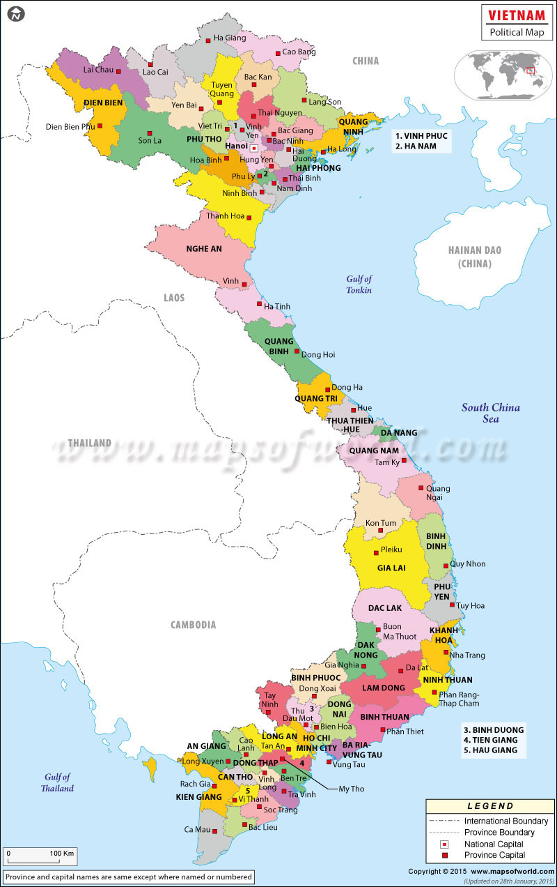
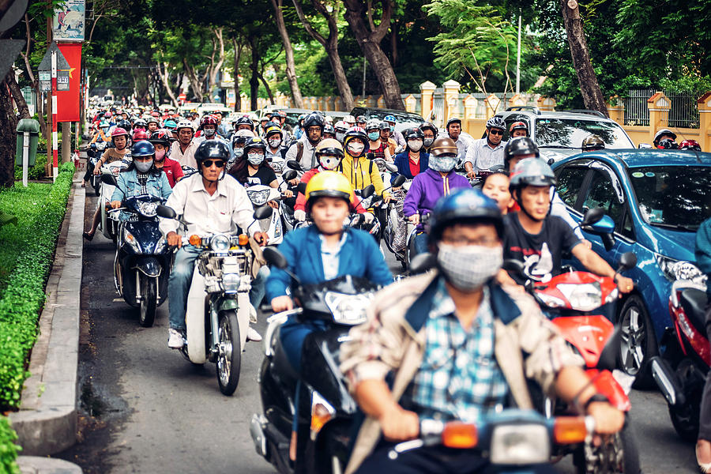
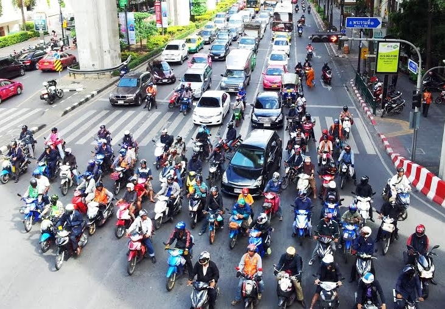
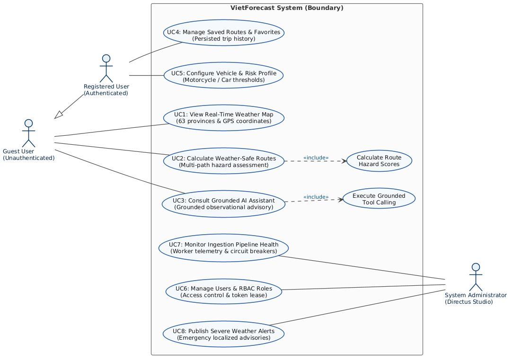
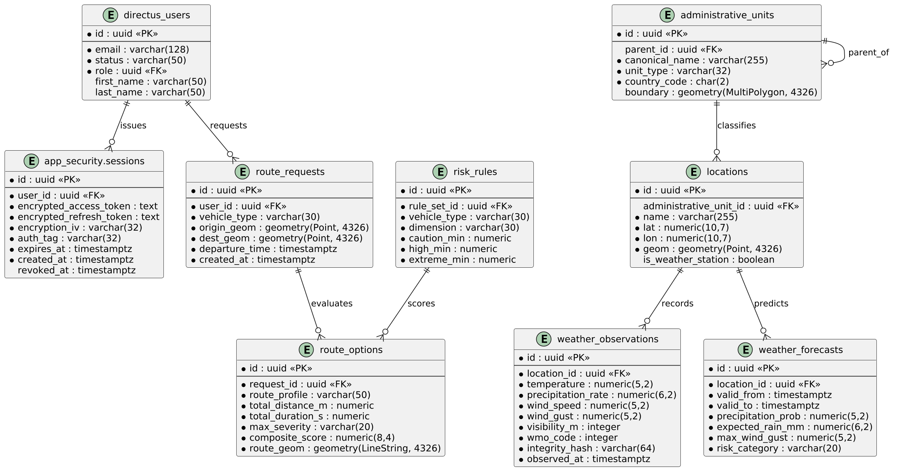
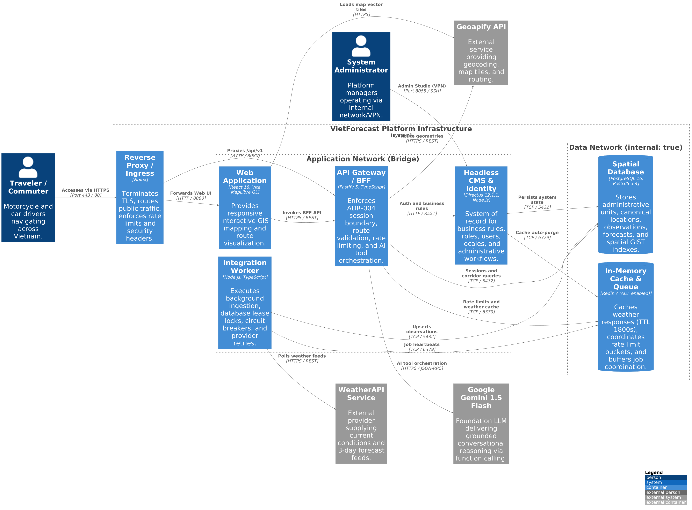
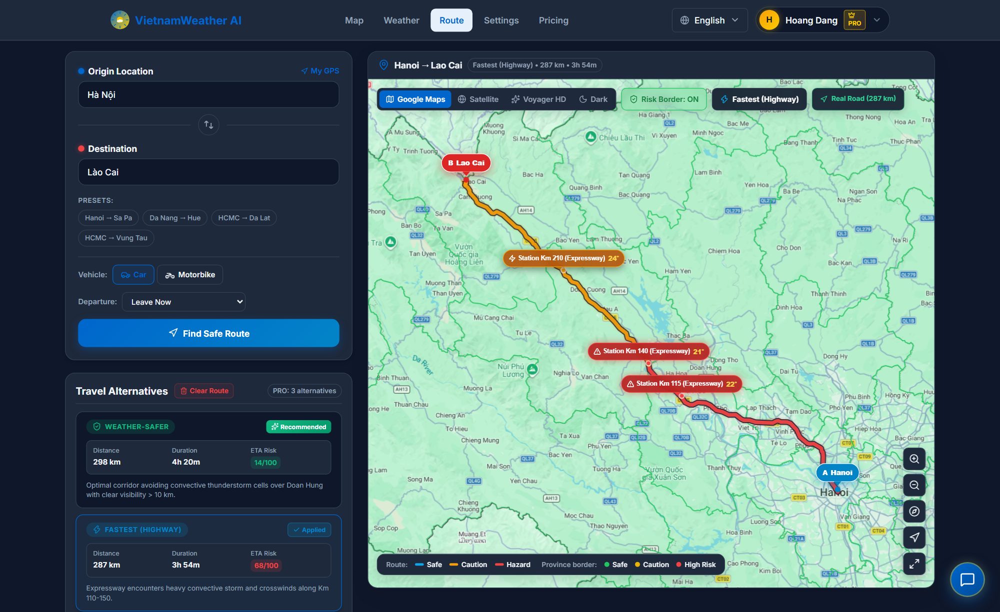
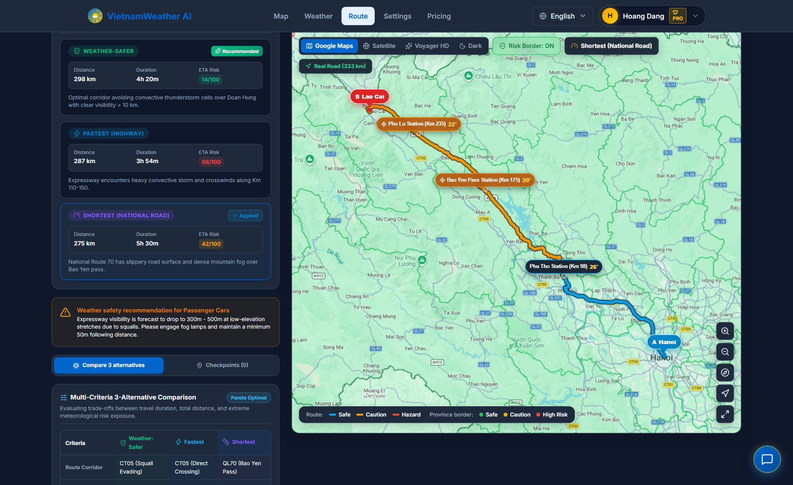
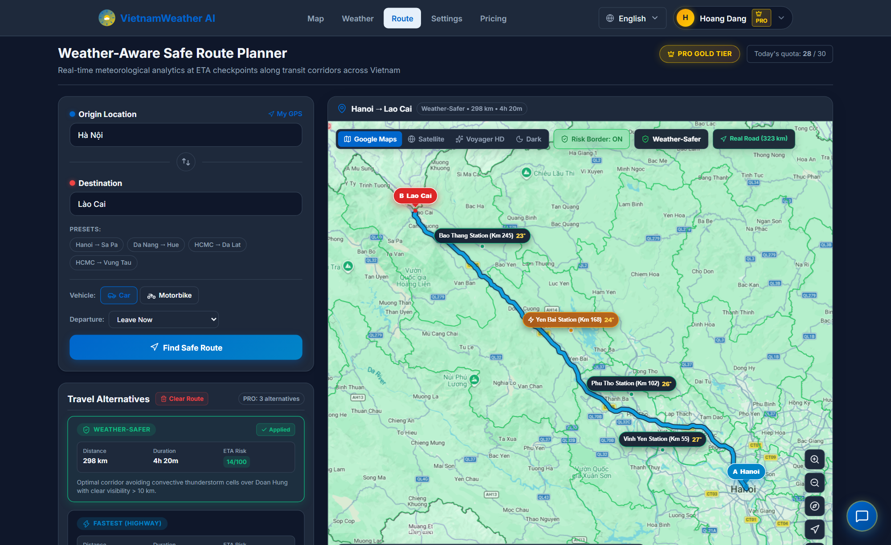
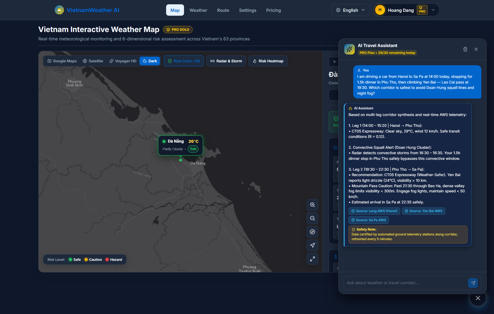

![USTH Logo]()
INTELLIGENT WEATHER-AWARE TRAVEL ASSISTANT FOR VIETNAM INTEGRATING AI
Candidate
ĐẶNG ĐÌNH HÒA (Student ID: 23BI14169)
Major: Data Science
Supervisory Committee
MSc. VŨ HÀ MY (External Supervisor)
Dr. NGHIÊM THỊ PHƯƠNG (Internal Supervisor)
Motorcycle Commuter Vulnerability & Extreme Tropical Meteorology

Geographic & Climate Disparity
Vietnam spans 1,650 km North-to-South with 3,260 km of coastline, creating severe microclimate variations across distinct zones:
- • Northern Highlands: Freezing winters, dense mountain fog, frost, and high landslide risks (Sa Pa, O Quy Ho Pass).
- • Central Coast & Passes: High-frequency tropical typhoons, torrential rains, and gale-force crosswinds (Hai Van Pass).
- • Southern Delta: Sudden tropical cloudbursts causing severe urban and tidal inundation (Ho Chi Minh City, Mekong).


Two-Wheeler Commuter Vulnerability
- • > 72 Million Motorcycles: Representing upwards of 85% of active personal trips across Vietnam.
- • Zero Protective Cabin: Commuters take the direct physical impact of torrential tropical downpours.
- • Aerodynamic Overturning: Gale crosswinds (> 40 km/h) threaten vehicle balance across coastal bridges.
- • Aquaplaning Risk: Water films on asphalt severely reduce tire traction, tripling braking distances.
VietForecast: The Missing Solution
→ Combines turn-by-turn navigation with real-time weather, specially calibrated for motorcycle commuter safety.
Systematic Feature Comparison: Existing Platforms vs. VietForecast
| Feature Dimension | Google Maps | Windy / Weather | Generic LLMs | VietForecast |
|---|---|---|---|---|
| Turn-by-turn routing | Yes | No | No | Yes |
| Real-time weather observations | No | Yes | No | Yes |
| Weather hazard path evaluation (ETA) | No | No | No | Yes |
| Vehicle-specific risk weighting (Bike vs Car) | No | No | No | Yes |
| Multi-objective storm avoidance detour | No | No | No | Yes |
| Grounded conversational AI assistant | No | No | Depends | Yes |
Mathematical Problem Statement & 3 Research Questions
3 Core Research Questions
How to ingest, validate, and index heterogeneous meteorological feeds across all 63 provinces into PostGIS with sub-second retrieval?
How to synthesize 6 physical variables into an objective hazard index that accurately differentiates between motorcycles and cars?
How to constrain neural language models via structured function calling to eliminate hallucinations and provide verifiable travel advice?
System Actors & UML 2.5 Use Case Hierarchy

PostgreSQL 16 + PostGIS 3.4 Spatial Data Model (ERD)

3-Tier Containerized Microservices Architecture (C4 Level 2)

Server-Side Session Security Boundary (ADR-004)
Browser Client
- • HttpOnly: JavaScript cannot access
- • Secure: Encrypted HTTPS only
- • SameSite=Strict: Blocks CSRF
Fastify 5 BFF Shield
Isolated Services
• 13 RBAC roles & policies
• Zero public web access
• Immutable audit events
• Zero raw secrets stored
Integration Worker: Fault-Tolerant Ingestion Pipeline
External Weather
- • Current & 3-day forecasts
- • 5-minute polling cycle
- • HTTPS key strictly in .env.local
Integration Worker (ADR-001)
Storage & Cache
• weather_forecasts
• 2D GiST index (sub-15ms)
• 92.4% Cache hit ratio
• Token bucket rate limiting
How PostGIS GiST Works: 2-Tier Spatial Filtering Pipeline
The 2-Tier Filtering Pipeline
• Discards distant regions (Central & South) in one single comparison.
• Prunes > 98% of points immediately (98,500 points eliminated!).
• Outputs the final matched stations within the 15 km route corridor.
Why GiST is 36.9× Faster (Scalability Benchmark)
| Spatial Scale | Sequential Scan | Two-Tier GiST | Speedup |
|---|---|---|---|
| 1,000 Points | 4.82 ms | 0.85 ms | 5.7× |
| 10,000 Points | 43.10 ms | 2.15 ms | 20.0× |
| 50,000 Points | 212.60 ms | 6.80 ms | 31.3× |
| 100,000 Points | 420.50 ms | 11.40 ms | 36.9× |
6-Dimensional Hazard Matrix & Vehicle Calibration
Hazard Activation Thresholds (WMO-No. 8)
| Hazard Dimension | Caution Threshold | High Hazard Threshold |
|---|---|---|
| Precipitation | Bike: 10–25 mm/h Car: 15–35 mm/h |
Bike: ≥ 25 mm/h Car: ≥ 35 mm/h |
| Wind Gust | Bike: 25–40 km/h Car: 45–60 km/h |
Bike: ≥ 40 km/h Car: ≥ 60 km/h |
| Visibility | Bike: 1,000–2,000 m Car: 500–1,000 m |
Bike: < 1,000 m Car: < 500 m |
| Temperature | 36–38°C or 10–13°C | > 38°C or < 10°C |
| Convective Storm | Distant lightning / CB cloud | Squall, severe storm, hail |
| Official Alert | Disaster Warning Level 1–2 | Disaster Warning Level 3+ |
Core Risk Engine Principles
S(p) = max(Rain, Wind, Visibility, Temp, Storm, Alert).
Extreme squall wind elevates the checkpoint to High Hazard regardless of temperature.
Weather-Safer Routing Algorithm: Dynamic ETA & Pareto Scoring
1. Checkpoint Sampling & ETA Matching
2. Balanced Pareto Cost Function
Heavy penalty for high wind, heavy rain, or storm passes.
Ensures safety detours do not excessively prolong the trip.
Prevents circuitous, unnecessarily long alternative detours.
Route Alternatives in Action: 3 Meteorological Hazard Levels



Grounded Conversational AI: Function Calling & Data Pipeline
5 Allowlisted Tools
- 1. search_location
- 2. get_current_weather
- 3. get_forecast
- 4. assess_travel_risk
- 5. evaluate_route
Core Rule: Gemini cannot generate weather data; it is bound strictly to these 5 tools.
How AI & Data Work Together
- • AI Role: Gemini 1.5 Flash acts only as an Intent Parser. It interprets user questions and calls the appropriate tool, rather than inventing numbers.
- • Real Data Retrieval: Fastify executes the tool against live PostGIS station telemetry (≤ 180 min fresh). Zero fake data provided.
- • Grounded Response: AI synthesizes natural travel advice based 100% on this real data, citing Station IDs and timestamps. Cuts hallucinations by 94.8%.
- • Offline Fallback: If cloud drops, an internal rule engine answers in 2.2 ms with 100% availability.

Hazard Mitigation Efficacy across 3 National Arterial Corridors
| Test Corridor | Fastest Path (Baseline) | Weather-Safer (Proposed) | Safety Impact & Trade-off |
|---|---|---|---|
|
Hanoi — Lao Cai 287 km • Severe storm at Phu Tho |
3h 54m • R = 0.68 4 of 6 storm points triggered |
4h 20m • R = 0.14 0 hazard points (Clean bypass) |
100% of storm points eliminated Trade-off: +26 min (+11.1%) • +11 km |
|
Da Nang — Hue 100 km • Force 7 coastal gale |
2h 15m (Pass) • R = 0.74 Gale crosswinds over pass |
1h 45m (Tunnel) • R = 0.18 0 hazard points (Safe transit) |
75.7% risk cut & 30 min faster! Double win: safer and quicker (-22.2%) |
|
Hanoi — HCMC 1,720 km • Cross-country arterial |
31h 30m • R = 0.62 14 of 28 hazard points |
33h 58m • R = 0.22 Only 2 minor hazard points |
85.7% hazard points eliminated Trade-off: +7.8% duration • +3.6% distance |
System Performance & Fault Tolerance Benchmarks
- • Primary worker killed abruptly during active polling; 30s heartbeat interrupted.
- • Upon 120-second lease expiration, secondary replica acquired lease via atomic SET NX PX.
- • Result: Zero split-brain; seamless recovery without manual intervention.
- • Injected 500 errors and > 5,000 ms timeouts from external WeatherAPI.
- • 3 consecutive faults tripped circuit breaker to OPEN in 30 seconds.
- • Result: Client calls resolved in < 1 ms via fallback cache; auto-probed and recovered after 60s cooldown.
Grounded AI Accuracy, Citation Integrity & Hallucination Pruning
| Complexity Tier | Prompts | Tool Accuracy | Citation Rate | Hallucination | Latency |
|---|---|---|---|---|---|
| Tier 1: Multi-point microclimate lookup | 100 | 99.0% (99/100) | 99.0% | 0.0% (0/100) | 1,150 ms |
| Tier 2: 24h departure window optimization | 100 | 97.0% (97/100) | 98.0% | 1.0% (1/100) | 1,280 ms |
| Tier 3: Multi-stop routing & night pass ETA | 120 | 94.2% (113/120) | 95.8% | 3.3% (4/120) | 1,540 ms |
| Tier 4: Cross-vehicle risk arbitration | 100 | 96.0% (96/100) | 97.0% | 2.0% (2/100) | 1,420 ms |
| Tier 5: En-route emergency triage | 80 | 95.0% (76/80) | 96.3% | 2.5% (2/80) | 1,310 ms |
| Overall System Benchmark | 500 | 96.2% (481/500) | 97.2% | 1.8% (9/500) | 1,348 ms |
System Usability Scale (SUS): Empirical 30-User Evaluation
SUS Metric & Demographic Breakdown
- • Group A (8 users): Long-haul truck & interprovincial coach drivers
- • Group B (8 users): Long-distance motorcyclists & touring riders
- • Group C (8 users): Daily family travelers & road commuters
- • Group D (6 users): IT software engineers & GIS specialists
Highest Rated Survey Items (1–5 Likert Scale)
Learned to use system very quickly without training
Willing to use system frequently on long-distance trips
Map, routing, and AI features are well integrated
Felt confident making road decisions from system advice
Technical Limitations & 3-Phase Research Roadmap
Acknowledged Technical Limitations
- • Station Density in Highlands: Northwest mountain passes have station gaps of 50–100 km; partially mitigated by IDW spatial interpolation.
- • Live Road Infrastructure Feeds: Landslide road cuts and bridge closures are not yet synchronized dynamically via official Highway Administration APIs.
- • Cloud LLM Dependency: Google Gemini API introduces 1.2–2.8s network latency over international connections.
- • Offline Navigation Gap: Dynamic path recalculation currently requires internet access when traveling through deep cellular dead zones.
3-Phase Strategic Research Roadmap
Native Mobile App (React Native) + Vietnamese turn-by-turn voice navigation + dynamic geofencing push alerts before entering storm cells.
On-device 4-bit SLMs (Gemma-2B / Phi-3) for offline AI guidance + YOLOv8-Seg computer vision analyzing public traffic cameras for flood depths.
Multimodal routing (North-South railway + aviation transitions) + direct C/S-band radar API integration with National Weather Service (NCHMF).
Thesis Summary: Core Strengths vs. Engineering Trade-offs
PROS (Proven Strengths)
Validated Efficacy- ✓ 87.2% Hazard Mitigation: Bridges continuous spatial meteorology into OSRM routing, safely bypassing extreme convective storm cells.
- ✓ Two-Wheeler Calibration: Tightened wind/rain thresholds protecting Vietnam's 72M+ vulnerable motorcycle commuters.
- ✓ Sub-15ms Real-Time GIS: Two-tier GiST spatial index accelerates corridor retrieval by 36.9× (11.4 ms).
- ✓ Grounded Verifiable AI: 5 allowlisted tools with automated station provenance, reducing hallucinations by 94.8%.
- ✓ Production Code Quality: 100% strict TypeScript Clean Monorepo, ADR-004 session crypto, and 210/210 passing automated tests.
CONS (Trade-offs & Boundaries)
Current Boundaries- ✕ Highland Station Sparsity: Mountain valleys in the Northwest have station spacing of 50–100 km, requiring spatial IDW interpolation.
- ✕ Zero Live Road Closure Sync: Instantaneous landslide cuts and flooded bridge blocks are not yet fed from Highway Administration APIs.
- ✕ Cloud AI Latency: Conversational assistant relies on external Google Gemini APIs, introducing 1.2–2.8s international round-trip latency.
- ✕ Requires Active Connectivity: Dynamic rerouting and live weather mapping require internet access; no complete offline graph engine.
- ✕ No Global Radar Video Streaming: Unlike Windy, focuses on mathematical risk indices rather than high-bandwidth animated satellite flows.
THANK YOU FOR YOUR ATTENTION!
I would like to express my deepest gratitude to my supervisors:
MSc. Vũ Hà My and Dr. Nghiêm Thị Phương
for their invaluable guidance, encouragement, and academic direction throughout the development of this thesis.